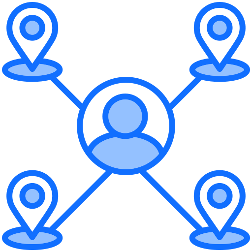

Avisos
05 de Maio, 2025
Prazo para submissão de novos projetos
O prazo para submissão de novos projetos para o semestre 2025.2 vai até o dia 20 de Maio.
30 de Abril, 2025
Workshop de Inteligência Artificial
Será realizado um workshop sobre IA aplicada no laboratório de Computação no dia 15 de Maio.
Projetos em Destaque
Sistema de Reconhecimento Facial
Desenvolvimento de um sistema de reconhecimento facial utilizando redes neurais para controle de acesso aos laboratórios.
Análise de Dados Ambientais
Coleta e análise de dados ambientais da região sul da Bahia utilizando técnicas de ciência de dados.

Aplicativo de Mobilidade Urbana
Desenvolvimento de um aplicativo para otimização de rotas de transporte público em Ilhéus e Itabuna.
Estatísticas
42
Projetos Ativos
156
Estudantes
23
Orientadores
18
Publicações